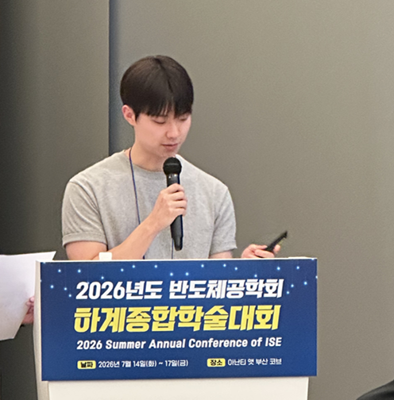
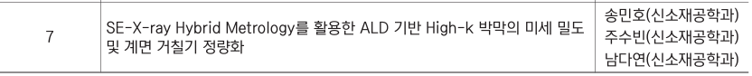

Conference presentation
2026 반도체공학회 특별세션 발표 현장입니다.
ALD-based High-k Thin Films
ALD High-k 초박막에서 standalone spectroscopic ellipsometry의 파라미터 상관성 문제를 검토하고, XRR 구조 정보를 제약조건으로 결합해 fitted solution의 물리적 신뢰성을 높이는 논리를 발표했습니다.

01 / OVERVIEW
SE는 비파괴·고속 광학 계측에 유용하지만, ALD 기반 High-k 초박막에서는 두께, n·k, roughness 같은 파라미터가 서로 강하게 상관될 수 있습니다. 이때 낮은 fitting error를 갖는 여러 해가 존재해도 모두 물리적으로 타당하다고 볼 수 없습니다.
02 / LOGIC
광학 모델에서 thickness, n·k, roughness가 함께 변할 때의 상관성 한계를 검토했습니다.
XRR에서 얻는 두께·밀도·계면 정보를 독립적인 물리 구조 정보로 다뤘습니다.
XRR 값을 fixed value 또는 constraint로 적용해 SE 해의 물리적 범위를 좁히는 접근을 정리했습니다.
03 / INSIGHT
핵심 결론은 fitting error가 낮다는 사실만으로 모델 파라미터의 물리적 타당성이 보장되지 않는다는 점입니다. 서로 다른 원리에 기반한 XRR 정보를 결합하면 SE 역문제의 자유도를 제한하고 해석의 물리적 신뢰성을 개선할 수 있습니다.
2026 반도체공학회 특별세션 발표 현장입니다.

저장소에 보존된 공식 발표 순서 이미지입니다.
04 / FILES
SE–X-ray hybrid metrology 발표 자료
VIEW PRESENTATION PDF ↗발표 사진, 공식 프로그램 이미지, PDF 원본
VIEW GITHUB REPOSITORY ↗